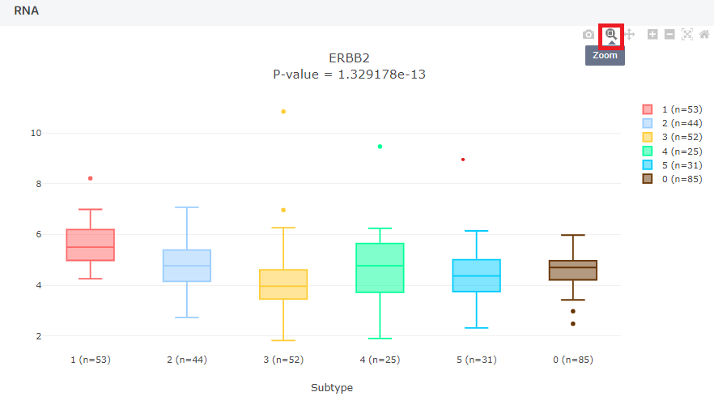
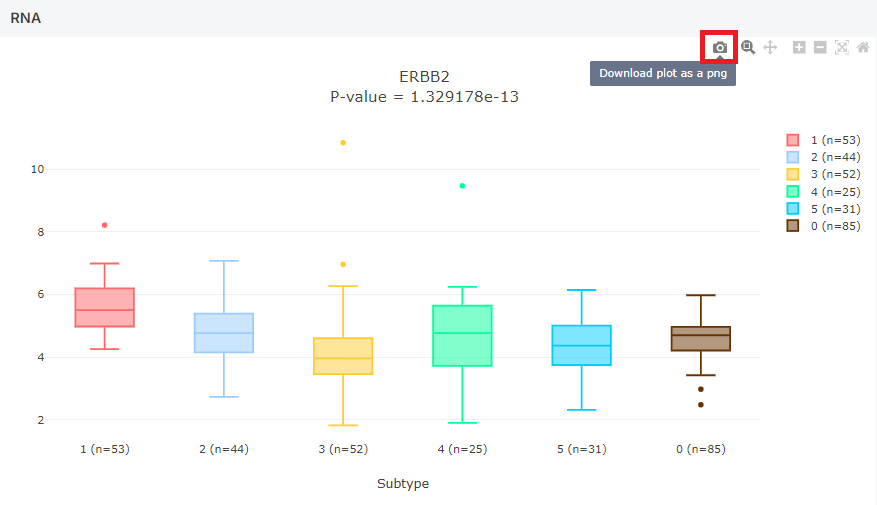

The t-test (Test statistic) is divided by the number of groups.
If the number of groups is 2, the Wilcoxon Rank-Sum Test (= Mann-Whitney U-test) is used.
Otherwise, if the number of groups is over 3, the Kruskal-Wallis test (= One way ANOVA on rank) is used.
The p-value represents the difference between each meta data of values.
In the meta columns, for the 'Subtype' and 'Histology' plots, normal data is included, and a boxplot is drawn.
In the 'Subtype', a value of "0" indicates normal data, while in the 'Histology', a value of "Normal" represents normal data.
In the 'Subtype Core', only data with a Subtype Membership Score above 0.5, indicated by a Subtype Core value of 'Y,' are selected. A boxplot is then generated for each Subtype.
In the first box (1) as shown below, select your target. The second box (2) is then used to choose the meta information for it to be compared to.
Press the [Apply] button to see results.
You can check the number of data used in the boxplot.
Search results can also be organized by its P-Value in the same type data.
| Subtype | Korean NSCLC Subtype (0 to 5, 0 is normal). |
|---|---|
| Subtype Core | Korean NSCLC Subtype (1 to 5) with only subtype core sample. The subtype core is determined based on each sample’s subtype membership score. Samples with a membership score of 0.5 or higher are classified as the core of the subtype and labeled “Y”, while those with a score below 0.5 are labeled “N”. |
| Histology | Name of pathological diagnosis classification for using this study. (AD :Adenocarcinoma , SC : Squamous cell carcinoma, MA : Mucinous adenocarcinoma, NC : Large cell neuroendocrine carcinoma and others, Normal: normal) |
| Sex | Sex (F: Female, M: Male). |
| Smoking | Status of smoking history on samples. (Cr: current smoker; Ex: quit smoking more than a year before sugery; N: non-smoker; NA: no information) |
| TNM Stage | The 8th Edition of the American Joint Committee on Cancer (AJCC-TNM) stage. |
| Pathologic N | Status of node metastasis on samples. (N0: no lymph node metastasis; N1: eastern pulmonary lymph node metastasis ; N2: eastern mediastinal lymph node metastatis) |
| Adjuvant Treatment | Status of adjuvant treatment on samples. (CTx: Chemotherapy; RTx: Radiation therapy; None: no treatment) |
| Recurrence Status | Status of recurrence on samples. (1: Recur occur; 0: Not recur occur; NA: No data) |
| TIL Pattern | The pattern of tumor infiltrating lymphocytes (TIL). |
| Immune Cluster | Cell type-based Immune Cluster (Hot, Cold). |
| Whole Genome Doubling | Presence of whole genome doubling. |
| TP53 | TP53 mutation status which contains CNV loss and truncating mutation or both. |
| Other Tumor Suppressor genes | Other tumor suppressor genes mutation status which contains CNV loss and truncating mutation or both. Other tumor suppressor genes consisted of CDKN2A, STK11, KEAP1, RB1, PPP2R1A, and SMARCA4. |
| EGFR | EGFR mutation status which contains L858R, exon19 deletion, other indels and other SNVs. |
| Other Oncogene Alteration | Other oncogenes mutation or fusion which contains KRAS, PIK3CA ERBB2, MET, ALK, ROS1, RET. |
How large the image appears on the screen can be adjusted using the zoom in and out buttons.
The resulting plot can be saved by pressing the save image button as shown below.
